Learning Tools Interoperability (LTI) is a standard for passing user, organization, and course information between learning management systems (tool consumers) and learning tools and tool providers, such as Codio.
LTI Keys and URLs
LTI Keys are used to integrate your LMS to Codio. These keys are required by your LMS administrator one time only so that Codio can be added as an LTI provider. Once Codio has been added as an LTI provider, you will not need them again and the remaining actions can be completed by LMS users who have Teacher/Instructor permissions.
Class and Unit URLs will be copied and pasted into your LMS system, once for the LMS class/course and once for each LMS unit/assignment.
We have platform specific integration documentation for the following LMS platforms, although for most LMS systems you should be able to utilise the Codio LTI App
LTI Keys
LTI keys are accessible to Codio Organization Owners only.
To find these keys:
- Go to your organization account settings by clicking on your user name in the bottom left of your dashboard and then selecting your organization within My Organizations.
- Select the LTI Integrations tab.
- Scroll down to the LTI Integration 1.0 section. You should see the following fields.
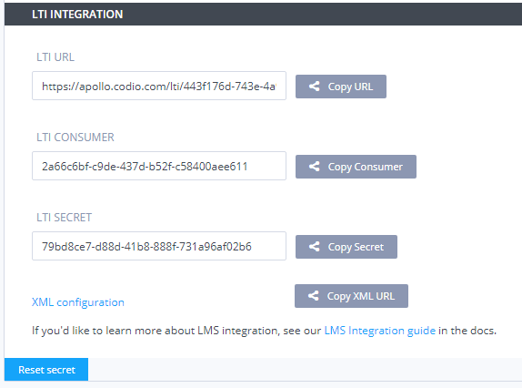
Class URL
The Class URL is used to map an LMS course to a Codio class. It ensures that Codio knows how to redirect students back to the correct course should they attempt to access the class through the Codio dashboard.
The LMS user who carries out these steps does not need to be a system administrator but must have suitable privileges to edit courses and assignments.
- In Codio, go to the Admin tab near the top.
- Select Edit Details in the bottom of the page.
- Near the bottom is a switch Enable LTI which you should enable.
- Below this is an empty field Class LMS URL. Switch back to your LMS and make sure you are on the Home page of the course. Copy the url in the address bar of your browser to the clipboard and paste it into the above mentioned field in Codio.
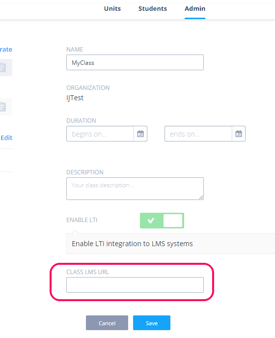
Unit URL
Please be sure to check out the Codio LTI App which allows for an easy way to integrate and to map Codio class units to your LMS system.
If you are unable to utilise the Codio LTI App, the Unit URL is where you map each individual Unit within your Codio Class to the corresponding unit/assignment in your LMS. It directs a student to the correct Codio unit and will automatically open the Codio unit.
- On the main class screen, click the icon with 3 blue dots and select LTI Integration URL.
- You should copy the LTI integration url to the clipboard by clicking on the field (it will auto copy).
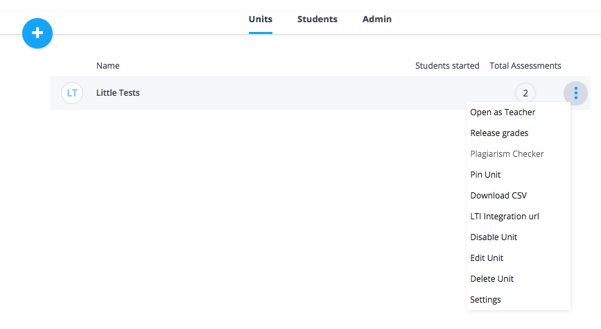
- Complete the mapping in your LMS.
Exporting LTI settings
The LTI integration URLs for the units in a class can be exported.
- Select the class, go to the Admin area and then press the Export LTI Settings button.
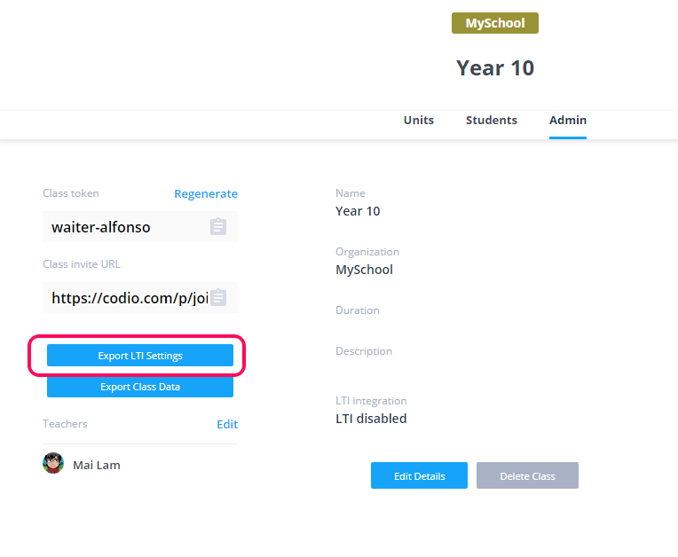
Codio LTI App
The Codio LTI App allows an easy way to integrate Codio with supported LMS systems.
Please note the steps below are for implementation in Canvas.
For details of other supported systems see https://www.eduappcenter.com/tutorials.
Preparation
The following steps need to be taken only one time per class.
In Codio
- Go to your organization account settings by clicking on your user name in the bottom left of your dashboard and then selecting your organization within My Organizations.
- Select the LTI Integrations tab.
- Scroll down to the LTI Integration 1.0 section. You should see the following fields. Remain on this screen for the time being.
In Canvas
The Canvas user who carries out these steps must be a system administrator.
- Create a new Course in your LMS system. We suggest you create a test course called Codio Test Course before you do it with a production course.
- Select the Course.
- Click on Settings in the left set of options.
- In the top links, select Apps.
- Click the large button View App Configurations.
- Click on the View App Center button.
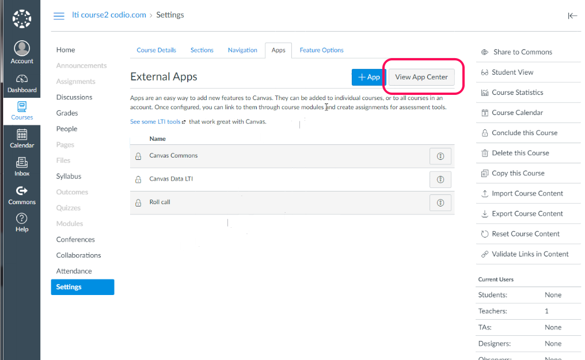
- Navigate (or filter) to find the Codio app, select and + Add App
In Codio and Canvas
We will now copy the following global integration fields from Codio to Canvas.
- LTI Consumer -> Consumer Key
- LTI Secret -> Shared Secret
and select the Add App button to confirm. You should then have something similar to this:
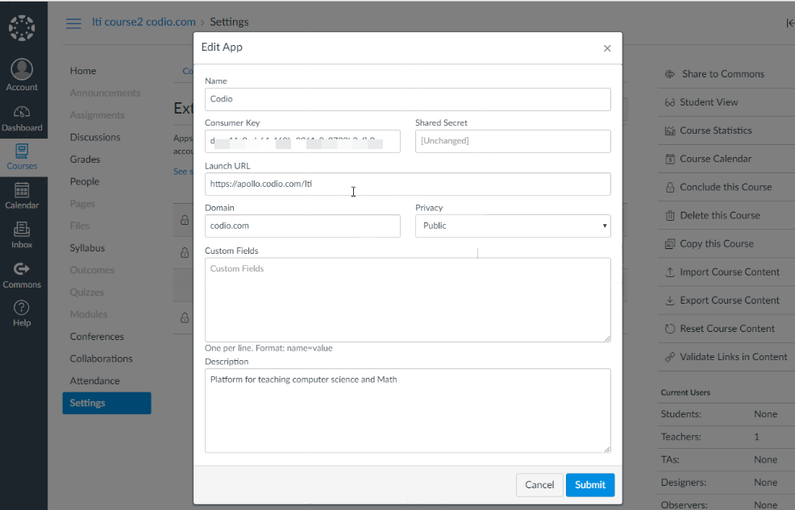
Class URL
The Class URL is used to map an LMS course to a Codio class. It ensures that Codio knows how to redirect students back to the correct course should they attempt to access the class through the Codio dashboard.
The LMS user who carries out these steps does not need to be a system administrator but must have suitable privileges to edit courses and assignments.
- In Codio, go to the Admin tab near the top.
- Select Edit Details in the bottom of the page.
- Near the bottom is a switch Enable LTI which you should enable.
- Below this is an empty field Class LMS URL. Switch back to your LMS and make sure you are on the Home page of the course. Copy the url in the address bar of your browser to the clipboard and paste it into the above mentioned field in Codio.
Mapping Codio units to Canvas unit/assignment
The Unit URL is where you map each individual Unit within your Codio Class to the corresponding unit/assignment in your LMS.
Where you have enabled the Codio LTI App in your LMS system, you can easily integrate units from your Codio class.
- Go to your Canvas Course and to Pages to add a new page,
- Click the Codio icon that will be available
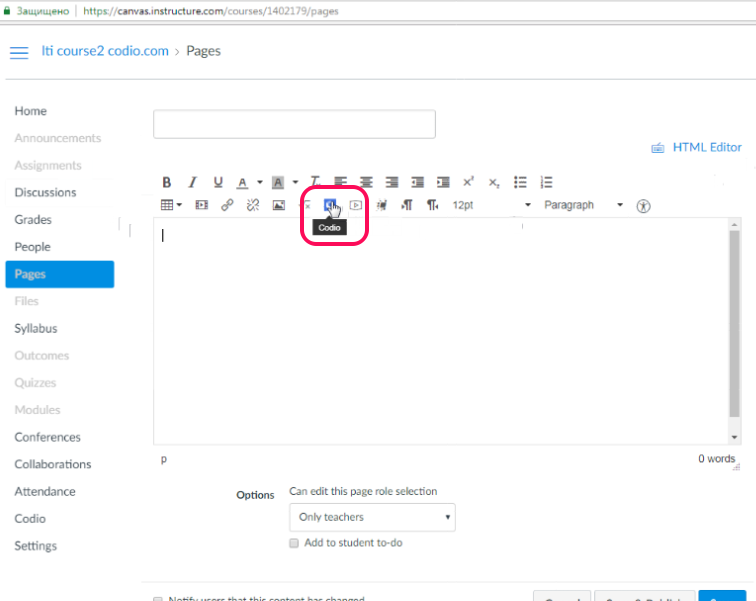
- A list of the Codio class contents will be shown, simply select the unit(s) you wish to add to Canvas and Save
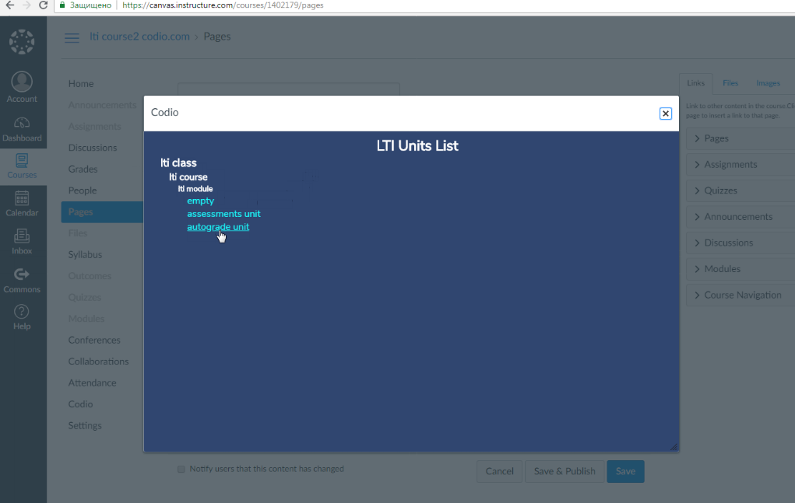
The assignment(s) and course will need to be published before students will be able to access them
For other methods to integrate Codio with LMS systems, check out the pages that follow
LTI Constant URLs
Enabling this setting enables constant URL for class units, class detection will be done based on the custom parameter your LMS should pass.
Constant URL's allows the transfer of learning content without modifying LTI links and they are also required if you wish to fork Codio classes and LMS Courses. See LTI Class fork for more on this.
Please note the screenshots below are for implementation in Canvas but other LMS systems should be similar. Refer to their documentation for more assistance
- Create an External app in your LMS using the configuration type: By URL
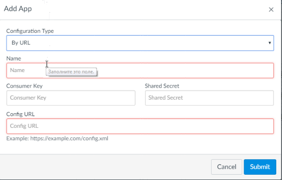
- Enter in the Consumer Key and Shared Secret from your Codio organisation
- Copy the XML URL into the Config URL field
- Submit
- Return to your Codio class and enable the Enable LTI constant URL's button, and save your changes
- Copy the LTI constant URL's enabled link
N.B. If your LMS supports it, lis_course_offering_sourcedid is also supported as a unique course identifier so you can replace codio_class_target_id if required
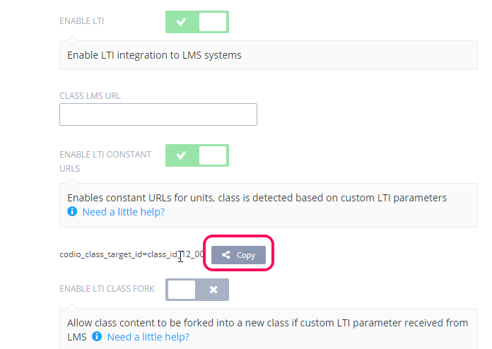
- Return to your LMS external app and 'edit'
- Paste the LTI constant URL's enabled link into the Custom Field
- Submit
LTI Class fork
Enabling this setting allows existing Codio class content used in your LMS to be forked into a new Codio class and a new course in your LMS. This should be enabled for the classes connected with the "Master" course in your LMS. The parameter will be disabled by default for for all forked classes.
Please note the screenshots below are for implementation in Canvas but other LMS systems should be similar. Refer to their documentation for more assistance
First enable LTI Constant URLs for your class.
- In your existing Codio class, enable the Enable LTI class fork button, and save your changes
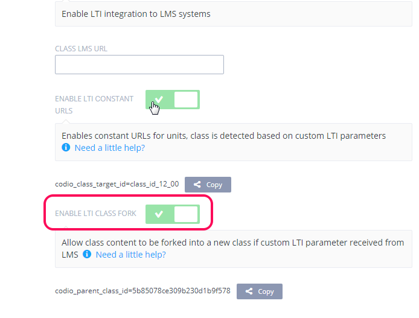
- In your LMS "Copy this Course" (or equivalent term for your LMS) and create your new course
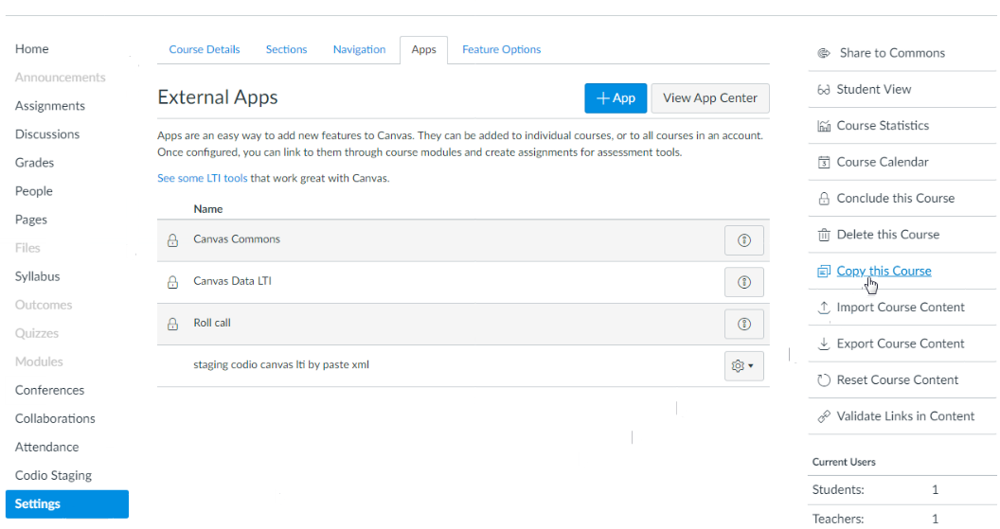
- When completed go to External Apps and edit the existing app connecting Codio to your LMS
- Replace the existing custom field that was set from your original Codio class with an id of your own (e.g something like codio_class_target_id=my_class_id_10)
N.B. If you LMS supports lis_course_offering_sourcedid you do not need to specify codio_class_target_id for the forked class, lis_course_offering_sourcedid will be used automatically to detect the course
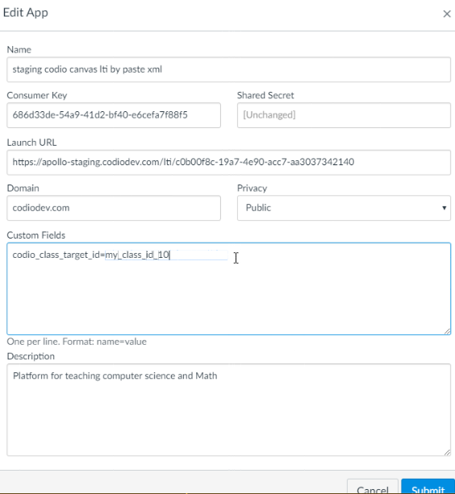
- In your existing Codio class, copy the content of the LTI class fork enabled field into a new line in the 'Edit App' custom field 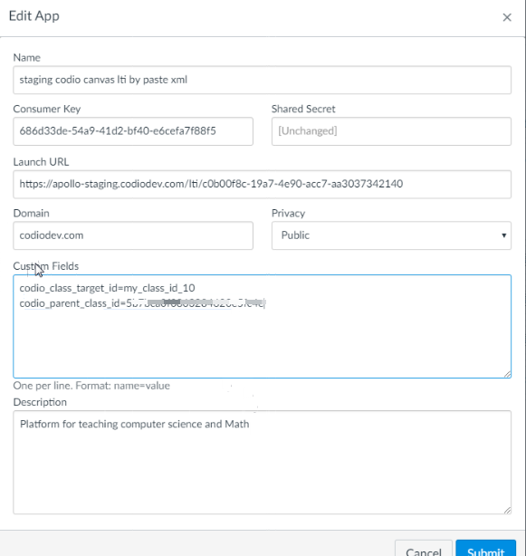
-
Submit
-
In the new course created in your LMS, open one of the new assignments and this will then create the new class in Codio containing the content from your original Codio class.
Grading
When grades are released a URL is passed to the LMS where students/teachers can access the grading information for the unit in the grading area of the LMS
By default, only the class teachers and the individual student can access the grading preview URL but by enabling the LMS shared feedback option for the class
Canvas
Please be sure to check out the Codio LTI App which allows for an easy way to integrate and to map Codio class units to your Canvas system.
Preparation
The following steps need to be taken only one time per class.
In Codio
- Go to your organization account settings by clicking on your user name in the bottom left of your dashboard and then selecting your organization within My Organizations.
- Select the LTI Integrations tab.
- Scroll down to the LTI Integration 1.0 section. You should see the following fields. Remain on this screen for the time being.
In Canvas, adding Codio as an App
The Canvas user who carries out these steps must be a system administrator.
- Create a new Course in Canvas. We suggest you create a test course called Codio Canvas before you do it with a production course.
- Select the Course.
- Click on Settings in the left set of options.
- In the top links, select Apps.
- Click the large button View App Configurations.
- Click on the blue + App button.
In Codio and Canvas
We will now copy the following global integration fields from Codio to Canvas.
- LTI Consumer -> Consumer Key
- LTI Secret -> Shared Secret
- LTI URL -> Launch URL
In Canvas you should then use one of the following steps
Manual Entry
- Enter a suitable name (Codio Canvas LTI) in the Name field.
- Enter apollo.codio.com into the Domain field.
- In the Privacy field, select Public
- Paste in the 3 Codio fields to the appropriate fields
You should end up with something like this.
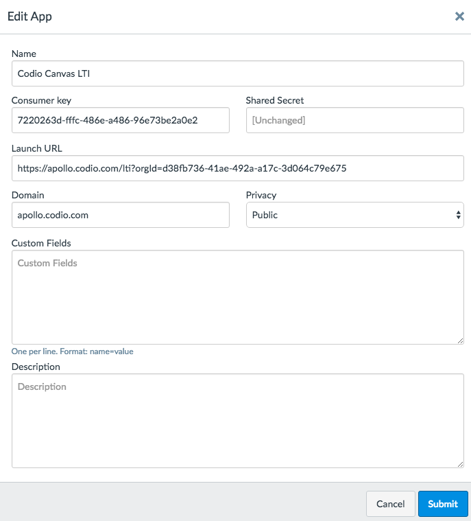
By URL
- Enter a suitable name (Codio Canvas LTI) in the Name field.
- In Codio select the Copy Consumer button to copy in to the Consumer Key field.
- select the Copy Secret Key to copy in to the Shared Secret field.
- select the Copy XML URL to copy in the to the Config URL field.
- and Submit
Paste XML
- Enter a suitable name (Codio Canvas LTI) in the Name field.
- In Codio select the Copy Consumer button to copy in to the Consumer Key field.
- select the Copy Secret Key to copy in to the Shared Secret field.
- click on the
XML Configurationlink to open the XML and then copy in the to the XML Configuration field. - and Submit
Codio Class setup
You need to perform the following actions one time only for a class. The Canvas user who carries out these steps does not need to be a system administrator but must have suitable privileges to edit courses and assignments.
- In Codio, create a new class and name it Canvas Demo.
- Click on the Admin tab near the top.
- Select Edit Details in the bottom of the page.
- Near the bottom is a switch Enable LTI which you should enable.
- Below this is an empty field Class LMS URL. Switch back to Canvas and make sure you are on the Home page of the course. Copy the url in the address bar of your browser to the clipboard and paste it into the above mentioned field in Codio. The url format should end with something like
/courses/1121212although the number will be different.
This URL ensures that Codio knows how to redirect students back to the correct Canvas course should they attempt to access the class through their dashboard.
Mapping a Unit to a Canvas Assignment
The final mapping step needs to be taken for each individual Unit within Codio. It maps a Canvas assignment to a Codio Unit.
In Codio
- On the main class screen, make sure the Units tab is selected.
- Click the + button and select Add Project.
- Select a project that has some autograded assessments. The My First Project that you created earlier in the Onboarding Guide has some auto-graded assessments. You can also assign another project but you will need to manually grade the Unit so there are some scores to pass back to the Canvas gradebook.
- Once the Unit has been added to the class, you should click the icon with 3 blue dots and select LTI Integration URL.
- You should copy the LTI integration url to the clipboard by clicking on the field (it will auto copy).
In Canvas
We now return to Canvas complete the mapping.
- Make sure you are in the Courses area.
- Click on the Assignments link in the left hand side.
- Provide a name for the Assignment.
- Set the points for the Assignment. When the grades get passed back later, the Codio percentage score will be scaled to the points value you specify here.
- Scroll down and look for the Submission Type field.
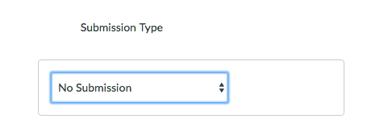
- You should now click on the dropdown list and select External Tool.
- In the new set of fields that appear, paste the Codio LTI Integration URL field into the url field in Canvas.
- Select Load This Tool In a New Tab.
- Click the Save and Publish button.
- Make sure the Canvas course is published.
Adding faculty and students
The final step is to add students to your course. This is done from the People tab. We recommend that you add the same test students to Canvas that you have in Codio. The only field of data that needs to match is the email address. So, look up the Codio test student email addresses and add them to Canvas in the student role.
When you add a student in Canvas you will need to confirm from the email you are sent.
Important : make sure you log out of your teacher based Canvas session before doing this.
Next, you should login to Canvas as a test student and start the assignment. Please read on to see what happens next, which is dependent.
IMPORTANT : when you access Codio from Canvas, this user will become the dominant Codio user in the browser. This means that if you have a Codio session open (say you are logged in as faculty) and you start an assignment from Canvas as a student, the old Codio session will be invalidated. To get around this, you should think about running your teacher account in a separate browser type or in an incognito window. Just be aware of this when testing.
Single sign-in and account creation
It is important to understand how Codio maps Canvas users to Codio users. The following rules should be understood. If students or faculty access Codio via a Canvas assignment then Codio will use the Canvas email address to identify the user.
- If the user is not known to Codio then we will sign up the user as a new Codio user in the background and take the user directly into the Codio content. The Canvas user role will be carried over as well.
- If the user is known to Codio then Codio will take them directly into the Codio content without any sign-in required. If they are a Codio user but are not a member of your organization then they will be required to complete a verification via email.
Generating scores
You should now generate some scores to pass back to Codio. You can do either of the following.
- If your assigned Codio Unit has some autograded assessments (simple MCQs will do fine) then access the Codio content as students as answer the questions to generate a score
- You can also manually grade the student Unit in Codio. You will need to enter a percentage value here as the LMS/LTI interface requires this.
Releasing grades
By default, grades in Codio are neither passed back to the student nor to Canvas until they are
- Marked as complete by either the student or the teacher and
- the Release Grades switch is enabled.
Once Release Grades is enabled, all completed student assignments are automatically sent through.
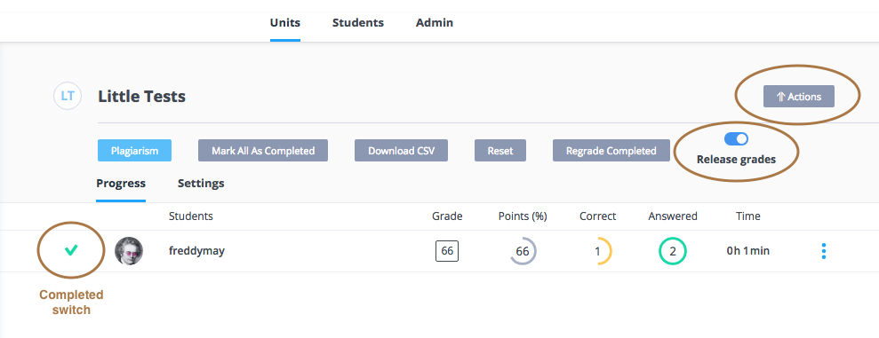
There are various ways to mark a student's work as complete
- The student can do this from either the classroom dashboard or from the Education->Mark as Complete menu in the assignment itself.
- The teacher can do the same in the unit when viewing students code
- The teacher can do the same from the Unit in the classroom dashboard by hovering in the left side of a student entry and then setting the completed switch.
- The teacher can mark all student assignments as completed in one action. This is done by
- selecting the Unit in the classroom
- pressing the Action button
- pressing the Mark all as Completed button
Blackboard
Please be sure to check out the Codio LTI App which allows for an easy way to integrate and to map Codio class units to your LMS system. The following page explains how to set up external apps in Blackboard Learn.
Preparation
The following steps need to be taken only one time per class.
In Codio
- Go to your organization account settings by clicking on your user name in the bottom left of your dashboard and then selecting your organization within My Organizations.
- Select the LTI Integrations tab.
- Scroll down to the LTI Integration 1.0 section. You should see the following fields. Remain on this screen for the time being.
In Blackboard
The Blackboard user who carries out these steps must be a Blackboard system administrator.
- Create a new Course in Blackboard. We suggest you create a test course called Codio Blackboard before you do it with a production course.
- Look for the System Admin tab near the top right of the page and select it.
- Look for the Building Blocks section and select it.
- Click on LTI tool providers.
- Click on Register Provider Domain in the menu bar.
- In the Provider Domain field, enter
apollo.codio.com. - In the Default Configuration section, set Default Configuration to be Set globally.
- In the Organization Policies section you should
- set Send User Data to Send user data only over SSL.
- in User Fields to Send you should set all 3 fields (Constituency in Course, Name, Email Address).
In Codio and Blackboard
Now return to the Default Configuration section in Blackboard. We will now copy the following global integration fields from Codio to Blackboard.
- LTI Consumer -> Tool Provider Key
- LTI Secret -> Tool Provider Secret
Codio Class setup
You need to perform the following actions one time only for a class. The Blackboard user who carries out these steps does not need to be a system administrator but must have suitable privileges to edit courses and assignments.
- Create a new class and name it Blackboard Demo.
- In the main class screen, click on the Admin tab near the top.
- Select Edit Details in the bottom of the page.
- Near the bottom is a switch Enable LTI which you should enable.
- Below this is an empty field Class LMS URL. Switch back to Blackboard and make sure you are on the main the Codio Blackboard course you created earlier. Copy the url in the address bar of your browser to the clipboard and paste it into the above mentioned field in Codio.
This URL ensures that Codio knows how to redirect students back to the correct Blackboard course should they attempt to access the class through their dashboard.
Mapping a Unit to Blackboard Content
The final mapping step needs to be taken for each individual Unit within Codio. It maps a piece of Blackboard content to a Codio Unit.
In Codio
- On the main class screen, make sure the Units tab is selected.
- Click the + button and select Add Project.
- Select a project that has some autograded assessments. The My First Project that you created earlier in the Onboarding Guide has some auto-graded assessments. You can also assign another project but you will need to manually grade the Unit so there are some scores to pass back to the Blackboard gradebook.
- Once the Unit has been added to the class, you should click the icon with 3 blue dots and select LTI Integration URL.
- You should copy the LTI integration url to the clipboard by clicking on the field (it will auto copy).
In Blackboard
We now return to Blackboard complete the mapping.
- Make sure you have selected the Blackboard course.
- Click Content in the left hand menu.
- Select or hover over Build Content in the menu bar
- Select Web Link.
- In the Web Link Information section ...
- Enter a name for the content
- Paste in the LTI Integration URL that you just copied to the clipboard from Codio
- Check the box Ths is a link to a tool provider
- Select Yes for the field Enable Evaulation after which more fields will appear
- Set the points you want to award for this content (Codio will automatically scale the percentage value it uses to the points you specify here)
- Save the content settings.
Adding faculty and students
The final step is to add students to your course. This is done from the People tab. We recommend that you add the same test students to Blackboard that you have in Codio. The only field of data that needs to match is the email address. So, look up the Codio test student email addresses and add them to Blackboard in the student role.
Next, you should login to Blackboard as a test student and start the assignment. Please read on to see what happens next, which is dependent.
IMPORTANT : when you access Codio from Blackboard, this user will become the dominant Codio user in the browser. This means that if you have a Codio session open (say you are logged in as faculty) and open some content from Blackboard as a student, the old Codio session will be invalidated. To get around this, you should think about running your teacher account in a separate browser type or in an incognito window. Just be aware of this when testing.
Single sign-in and account creation
It is important to understand how Codio maps Blackboard users to Codio users. The following rules should be understood. If students or faculty access Codio via a Blackboard assignment then Codio will use the Blackboard email address to identify the user.
- If the user is not known to Codio then we will sign up the user as a new Codio user in the background and take the user directly into the Codio content. The Blackboard user role will be carried over as well.
- If the user is known to Codio then Codio will take them directly into the Codio content without any sign-in required. If they are a Codio user but are not a member of your organization then they will be required to complete a verification via email.
Generating scores
You should now generate some scores to pass back to Codio. You can do either of the following.
- If your assigned Codio Unit has some autograded assessments (simple MCQs will do fine) then access the Codio content as students as answer the questions to generate a score
- You can also manually grade the student Unit in Codio. You will need to enter a percentage value here as the LMS/LTI interface requires this.
Releasing grades
By default, grades in Codio are neither passed back to the student nor to Blackboard until they are
- Marked as complete by either the student or the teacher and
- the Release Grades switch is enabled.
Once Release Grades is enabled, all completed student assignments are automatically sent through.
There are various ways to mark a student's work as complete
- The student can do this from either the classroom dashboard or from the Education->Mark as Complete menu in the assignment itself.
- The teacher can do the same in the unit when viewing students code
- The teacher can do the same from the Unit in the classroom dashboard by hovering in the left side of a student entry and then setting the completed switch.
- The teacher can mark all student assignments as completed in one action. This is done by
- selecting the Unit in the classroom
- pressing the Action button
- pressing the Mark all as Completed button
Important : If you are running a staging or test Blackboard environment then you must have a valid SSL certificate on your Blackboard server otherwise grades will not be pass back to Blackboard successfully.
Moodle
Please be sure to check out the Codio LTI App which allows for an easy way to integrate and to map Codio class units to your LMS system. Moodle added support for LTI™ apps in version 2.2. The following page explains how to set up external apps in Moodle.
Authentication and account creation
Once you have configured the LTI/LMS settings, Moodle manages all aspects of signing in to Codio as well as account creation. All your teachers and students need is a Moodle account.
If a Moodle user has never used Codio before then an account will automatically be created when they access their first Codio course materials.
If a Moodle user already has a Codio account then provided the email address of their Codio account matches the email address of their LMS account the same Codio account will be used. If, however, the user has used a different email address within Codio, then a new Codio account will be created that matches that of the Moodle account.
Setup, configuration and usage
The following instructions are provided as short videos.
One time setup
You will not have access to the Moodle/LMS features unless you have an educational organization setup as explained in the video.
Important : Codio needs the User Role, Email Address and Name of the Moodle user in order to work. It is important that you access the LTI security settings and ensure that these three fields are always enabled.
Please note : Since these videos were created, the Codio keys are now found on the LTI Integration tab in your organisation My Organistaions area
Mapping Moodle Courses and creating Moodle Activities
This video covers the two key aspects of Moodle->Codio mapping...
- mapping your Moodle Course to a Codio Class, a one-time only configuration for a new class
- creating a Moodle Activity within a Course and mapping it to a Codio Unit
Using Codio from Moodle - student view
Explains how students access Codio from within the LMS.
Using Codio from your LMS - teacher view
Explains how teachers can access students' Codio projects from the Codio Classroom or from Moodle.
Grading student work and grade transfer to the Moodle gradebook
This video shows
- how teachers grade student work in Codio
- how grades are not released to students either in Codio or the LMS until the teacher says so
- how grades are transferred to the Moodle gradebook once the teacher selects the Release Grades option